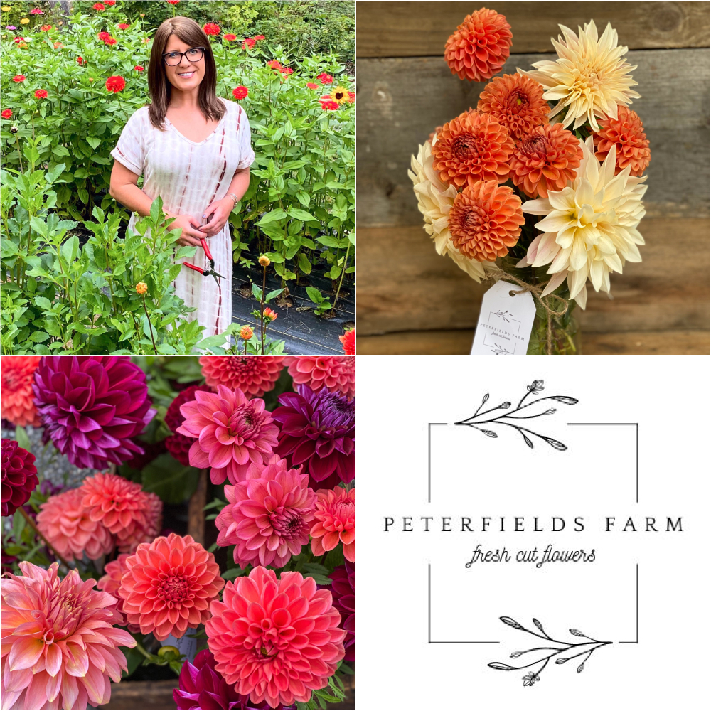

Member Spotlight
Dahlias from the Garden of YDS Member Justine
Muir of Peterfields Farm

Photography by: Justine Muir
Petersfields Farm on Facebook
@peterfieldsfarm on instagram
Your Garden
How big is your garden?
I have seventeen raised beds of various sizes
and newly cleared land which so far has five
100’ rows. These rows are where I had my
zinnias, sunflowers and dahlias, including the
dahlias I grew as a growing partner for Y.D.S.
this season. I’m looking forward to continuing
to expand that area for spring 2022. I also have
a lean-to greenhouse which is incredible for
seed starting and extending the growing season.
How many years have you been growing in your
current garden?
This is my fourth season living and growing here
on my property in Westminster, MA.
Do you have more than one garden location?
Just this one.
What else do you like to grow?
I have two indoor rabbits, Peter (hence
Peterfields Farm) and Rose so I grow all their
food which includes a whole bunch of varieties
of lettuce, endive, kale, and many many many
herbs. I also grow tomatoes and cucumbers.
Flowers, however, are my favorite thing to grow.
Along with dahlias, I grow tulips and narcissus
in the spring, then also peonies, snapdragons,
celosia, amaranth, gomphrena, strawflower,
zinnias, cosmos, sunflowers, giant marigolds and
lots of fillers and flowering perennials.
Does your garden hobby have any other
“collections” of plant varieties?
Yes! I have twenty-one chickens and a small
flock of celadon quail. They all lay eggs in a
variety of colors and snack on “leftovers” from
my garden. Chickens absolutely love marigolds so
I grow tons for them and dry plenty to add to
their feed year round.
What do you love most about gardening?
Least?
I love everything about gardening. I love being
outside and working hard. I love caring for all
things, especially plants, animals and nature.
My grandmother, Nonee taught me how to garden so
it also brings me back to those happy memories
with her. I’ve been hooked ever since she handed
me some green bean seeds in the spring of 2012.
Your Dahlias
When did you start growing dahlias?
This is my third year growing dahlias.
How did you get introduced to dahlias?
Three years ago I purchased dahlia seeds on a
whim after seeing the “Giant Hybrid Mix” in the
Johnny’s catalog. I knew absolutely nothing
about them but I followed the directions on the
back of the package and miraculously, a few
months later I had beautiful dahlia blooms. Late
that fall as I was adding some amendments to the
soil, I stumbled across what I now know to be
tuber clumps. At that time I still didn’t know a
darn thing about dahlias so I tossed them out
and I remember thinking that they must have been
something left over from the previous homeowners
who were also avid gardeners. That winter, bored
and cold, I started researching and reading
everything I could about dahlias. I became
completely obsessed. I placed orders for tubers
from two local Massachusetts farms, Fivefork
Farm and Happy Hollow Farm, which is in my
hometown of sweet sweet Barre, MA. I had 18
dahlias in 2020.
How many Dahlias do you have in 2021?
In 2021 I had 242 dahlias. 89 of those I grew
for Y.D.S. I purchased all my tubers from farms
and growers in New England.
What’s your favorite top 1-10 dahlias?
Most difficult question ever! I probably claim a
different dahlia as ‘my favorite’ almost daily.
Overall I would say my favorites from this year
were Brown Sugar, Chimacum Katie, Ivanetti (a
Y.D.S. dahlia), Diva (also a Y.D.S. dahlia) and
Parkland Tribute.
Do you have a favorite form?
Since I’m mostly into growing for cut flower
bouquets, ball and formal decorative are the two
forms I have the most of.
Do you have a favorite color?
I love them all but corals, pinks and purples
are probably the three colors I couldn’t live
without.
What do you love most about dahlias?
While some people may think dahlias are a lot of
work, I think that’s one of the things that I
love most about them. I love dedicating time and
energy into them and seeing the amazing
transformation from a (fairly unsightly) tuber
to a beautiful plant and then the dahlia blooms.
I also love how I am constantly learning from
them.
Do you have a goal in mind for your garden
that you are working towards?
My goal is to flower farm, continue to expand
and sell fresh cut flower bouquets. I recently
opened a self serve stand and sold at my first
market event. I’m excited to continue with the
stand and do more markets and pop-up events next
year. Eventually I would like to sell to local
florists doing wedding work and maybe also offer
you-picks. I would love to someday have flowers
be my “nine-to-five” job and to specialize in
dahlias.
|